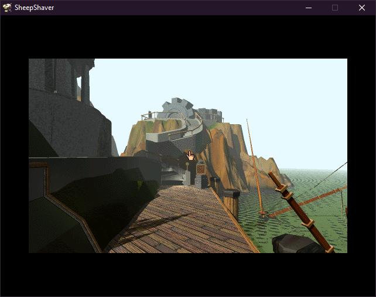

Setting up and running SheepShaver
(She wanted Safecracker, but I installed Myst.)
There was probably information on this sort of thing,
but for me it's running into the issue head first.
Part 1: Prerequisite Files
Starting off we actually need the program SheepShaver which is on;
Windows,
Linux and
Mac OS X.
For the build of Mac OS we're going to be using Mac OS 8.5.
OS 9 might also work as well, but I'm just showing what I know.
For the ROM File we're going to be using a Power Mac 6500.
We also want our game in the .toast format, this is the format it wants to have. We're using Myst.
What you thought I was actually going to provide that stuff? No.
Part 1: Setting up SheepShaver
We're going to be using the SheepShaverGUI setup for this, otherwise I would want to void out.
Within Volumes
Add both the Mac OS 8.5 iso and the game you wish to install (in my case it's Myst.toast).
Create and name the Volume File (I have mine set to 256MiB, as Mac OS requires 157MiB).
Within Graphics / Sound
Set the Windows Refresh Rate to 60 Hz and the Width / Height to whatever you want (in this case I'm using 640x480).
You can adjust the Render Driver away from Software, but for my sake I'm leaving it on Software.
Within Memory / Misc
Set the MacOS Ram Size (MB) to whatever you want, I'm using 256MB.
Point the ROM file, to the-- ROM File that you're going to be using (in our case it's the Power Mac 6500 mentioned earlier).
Select Start.
Part 2: Installing MacOS and Playing Your Title
Follow the initialization process.
Afterwards select Mac OS Install from the Mac OS disk and follow its process.
After installation select Special and Shut Down.
You can now remove the Mac OS 8.5 iso within SheepShaverGUI, since we don't need to install a new instance.
You can now launch without the GUI executable, and now you can follow the installation process for the game you want to play.
Congratulations, you can now play your game-- Myst.

And that's Myst.